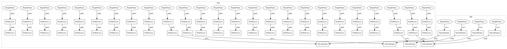

abc07f4efd816ba4e82221e69bee752f5c876148,models/experimental/densenet_keras/densenet_keras_imagenet.py,ImageNetInput,dataset_parser,#ImageNetInput#Any#,113
Before Change
"image/format": tf.FixedLenFeature((), tf.string, "jpeg"),
"image/class/label": tf.FixedLenFeature([], tf.int64, -1),
"image/class/text": tf.FixedLenFeature([], tf.string, ""),
"image/object/bbox/xmin": tf.VarLenFeature(dtype=tf.float32),
"image/object/bbox/ymin": tf.VarLenFeature(dtype=tf.float32),
"image/object/bbox/xmax": tf.VarLenFeature(dtype=tf.float32),
"image/object/bbox/ymax": tf.VarLenFeature(dtype=tf.float32),
"image/object/class/label": tf.VarLenFeature(dtype=tf.int64),
}
After Change
def dataset_parser(self, value):
Parse an ImageNet record from a serialized string Tensor.
keys_to_features = {
"image/encoded": tf.FixedLenFeature((), tf.string, ""),
"image/format": tf.FixedLenFeature((), tf.string, "jpeg"),
"image/class/label": tf.FixedLenFeature([], tf.int64, -1),
"image/class/text": tf.FixedLenFeature([], tf.string, ""),
"image/object/bbox/xmin": tf.VarLenFeature(dtype=tf.float32),
"image/object/bbox/ymin": tf.VarLenFeature(dtype=tf.float32),
"image/object/bbox/xmax": tf.VarLenFeature(dtype=tf.float32),
"image/object/bbox/ymax": tf.VarLenFeature(dtype=tf.float32),
"image/object/class/label": tf.VarLenFeature(dtype=tf.int64),
}
parsed = tf.parse_single_example(value, keys_to_features)
image = tf.reshape(parsed["image/encoded"], shape=[])
image = tf.image.decode_jpeg(image, channels=3)
image = tf.image.convert_image_dtype(image, dtype=tf.float32)
image = self.image_preprocessing_fn(
image=image,
output_height=224,
output_width=224,
is_training=self.is_training)
label = tf.cast(
tf.reshape(parsed["image/class/label"], shape=[]), dtype=tf.int32)
return image, tf.one_hot(label, _LABEL_CLASSES)
def input_fn(self):
Input function which provides a single batch for train or eval.
In pattern: SUPERPATTERN
Frequency: 4
Non-data size: 58
Instances
Project Name: tensorflow/tpu
Commit Name: abc07f4efd816ba4e82221e69bee752f5c876148
Time: 2020-01-16
Author: yanhuasun@google.com
File Name: models/experimental/densenet_keras/densenet_keras_imagenet.py
Class Name: ImageNetInput
Method Name: dataset_parser
Project Name: tensorflow/tpu
Commit Name: bbe1c373397c65b097987eeaf5fea8b1321d958e
Time: 2020-02-24
Author: yanhuasun@google.com
File Name: models/official/densenet/densenet_imagenet.py
Class Name: ImageNetInput
Method Name: dataset_parser
Project Name: tensorflow/tpu
Commit Name: bbe1c373397c65b097987eeaf5fea8b1321d958e
Time: 2020-02-24
Author: yanhuasun@google.com
File Name: models/official/amoeba_net/amoeba_net_model.py
Class Name: InputPipeline
Method Name: _dataset_parser
Project Name: tensorflow/tpu
Commit Name: 29b638b6daa1836cb37db4a24e3bb379f525e883
Time: 2019-09-23
Author: rsopher@google.com
File Name: models/experimental/resnet50_keras/imagenet_input.py
Class Name: ImageNetInput
Method Name: dataset_parser